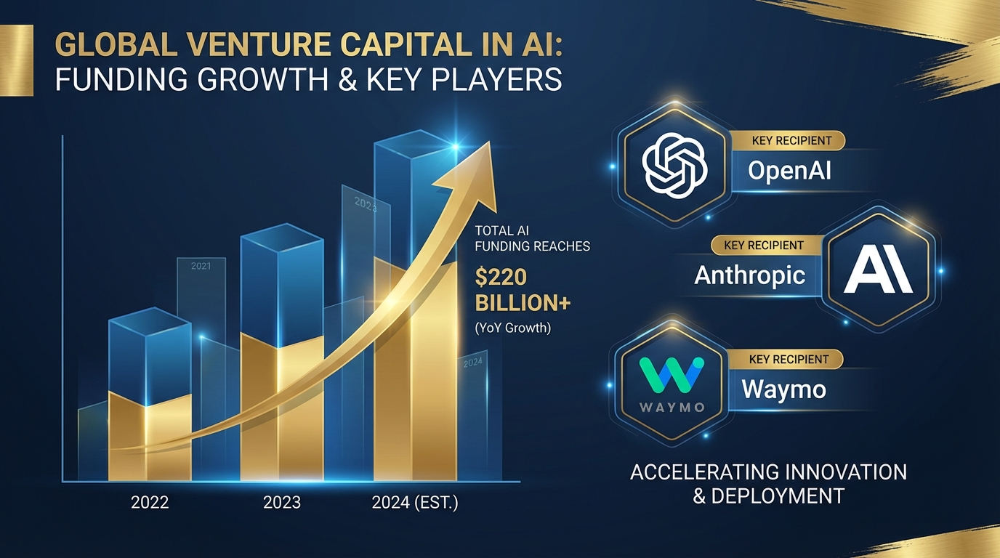

Let me put this in perspective for you. In February 2026 alone, AI companies raised $171 billion. That's not a typo. One hundred seventy-one billion dollars. In a single month. And it represents 90%—ninety percent—of all global venture capital deployed that month. The numbers are so large they become abstract. So let's make them concrete.
The February Mega-Rounds
Three deals accounted for 83% of all global venture capital in February:
OpenAI: $110 billion at an $840 billion valuation. Amazon ($50B), SoftBank ($30B), and NVIDIA ($30B) wrote the checks. This is the largest funding round in history—not just AI history, but history history.
Anthropic: $30 billion Series G at a $380 billion valuation. In any other month, this would be the story of the decade. In February 2026, it was Tuesday.
Waymo: $16 billion for autonomous vehicle expansion. Alphabet's self-driving car project is now worth more than most Fortune 500 companies.
Three companies. $156 billion. That's more than the GDP of most countries.

The Concentration Problem
Here's what keeps me up at night: the concentration of AI capability in a handful of companies is becoming extreme.
Training frontier models now requires capital at a scale that only a few players can access. The compute costs alone—millions of dollars per training run—create an insurmountable barrier to entry. And that's before you factor in the talent costs, the data acquisition costs, the research infrastructure.
The result is an industry that's consolidating around a few massive players while everyone else fights for scraps. Startups aren't building foundation models anymore—they're building on top of OpenAI's, Anthropic's, or Google's models. The infrastructure layer is being locked down.
What $220 Billion Buys
So what does all this capital actually purchase? In the near term:
Compute at unprecedented scale. These companies are buying every GPU they can get their hands on. They're building data centers that consume more power than small cities. They're negotiating exclusive deals with chip manufacturers.
Talent acquisition without constraints. When you have $100+ billion in the bank, you can hire anyone. The entire AI research community is now effectively employed by a handful of companies. The best minds, the most promising research directions, the critical breakthroughs—all concentrated in a few organizations.
Regulatory capture. Money buys lobbyists. Lobbyists buy favorable regulation. The companies with the deepest pockets will shape the rules that govern AI development. That's not corruption—it's just how the system works. But it means the incumbents will write the rules that protect their incumbency.
The Startup Dilemma
If you're an AI startup founder right now, you're facing a brutal reality. The foundation model layer is closed off. You can't compete with OpenAI's $110 billion war chest. You can't out-research Anthropic's $380 billion valuation. You can't out-compute Google's infrastructure.
Your options are:
- Build on top of the giants. Use OpenAI's API, Anthropic's Claude, Google's Gemini. Accept that you're a tenant on someone else's platform. Hope they don't build your feature.
- Find a niche they don't care about. Vertical applications, specialized domains, regulated industries. Places where the giants won't bother to compete.
- Get acquired. Build something impressive enough that one of the giants buys you. This is increasingly the exit strategy for AI startups.
- Pivot to AI infrastructure. Help other companies use AI. The picks-and-shovels play. It's less glamorous but potentially more durable.
The Bubble Question
Is this a bubble? Honestly, probably. But it's a bubble built on real capabilities and real revenue. OpenAI is reportedly doing billions in annual revenue. Anthropic's enterprise business is growing rapidly. These aren't pets.com-style valuations based on eyeballs and hope.
That said, the concentration of capital is unsustainable in the long run. Not every AI startup can be worth billions. Not every foundation model company can survive. At some point, there will be consolidation. Some of these mega-rounds will turn out to be mistakes.
The question is whether the bubble popping takes down the entire industry or just deflates the most inflated valuations. My bet is on the latter—but I've been wrong before.
What Happens Next
The $220 billion figure from January-February isn't sustainable. It can't be. There's not enough capital in the world to maintain that pace.
But the underlying trend—capital concentration in AI—isn't going away. The companies that raised these mega-rounds will use that capital to extend their leads, acquire competitors, and lock in their positions as the infrastructure layer for the AI era.
For everyone else, the game is about adaptation. How do you build value when the foundation is owned by someone else? How do you compete when the giants have unlimited resources? How do you find opportunity in a landscape dominated by a few massive players?
The answers aren't easy. But they're the questions every AI entrepreneur needs to be asking.
The money has spoken. Now the rest of us have to figure out what to do about it.